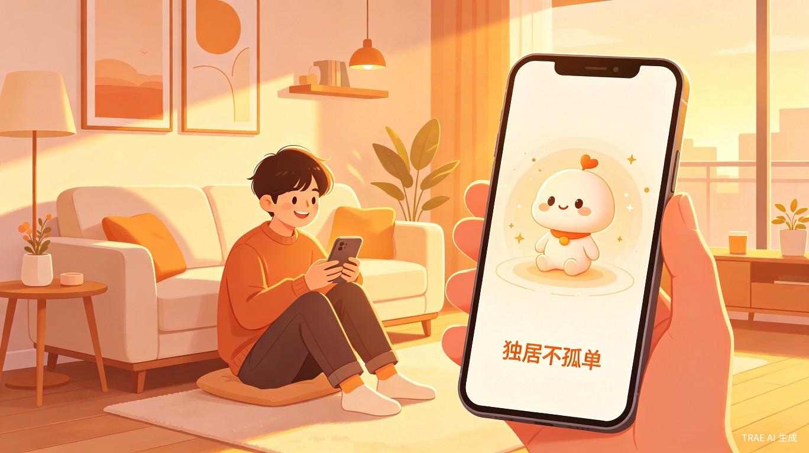
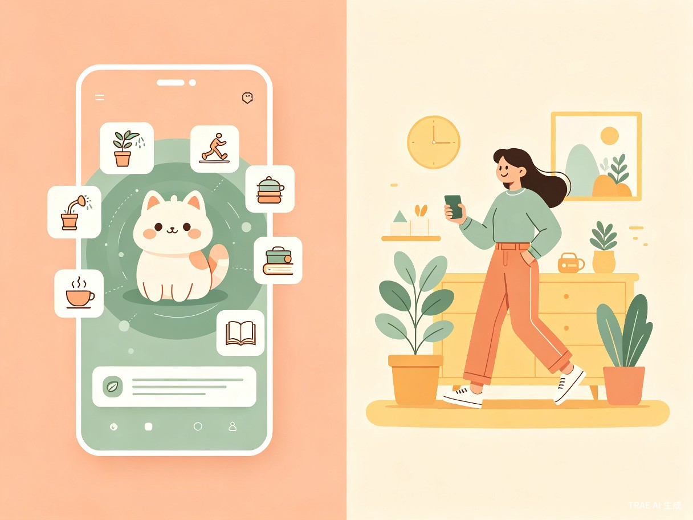
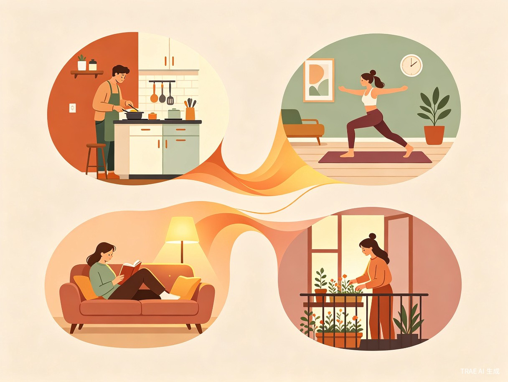
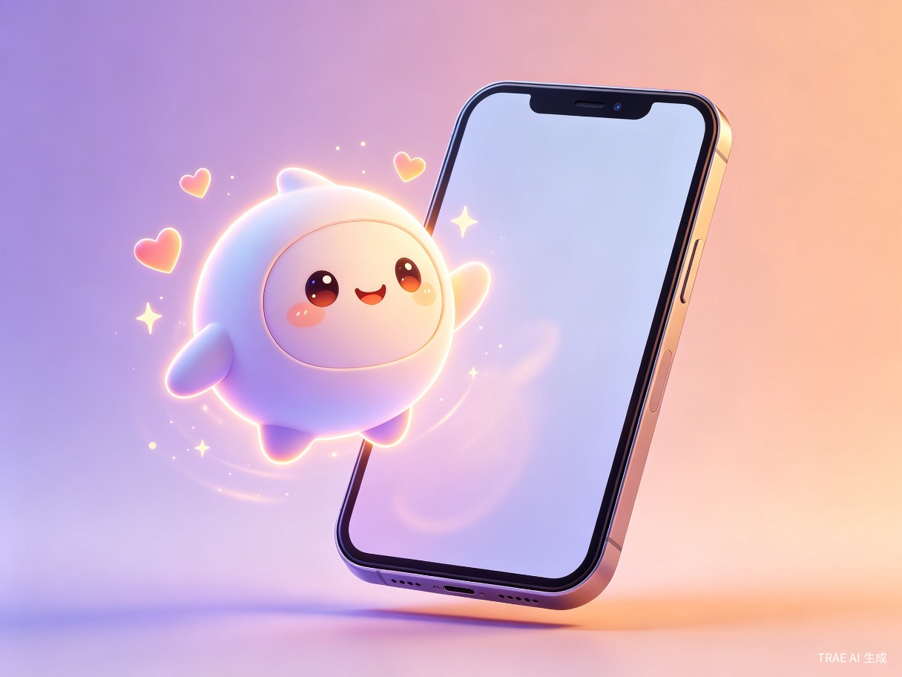

1 创意名称与介绍
想解决什么问题
中国有超过 7700 万独居青年[1]，其中 63% 的人每天大量时间独处[2]。独居带来的结构性孤独——不是不想社交，而是社交成本太高、节奏不匹配——正成为年轻一代普遍的心理痛点。88.2% 的青年处于压力状态[3]，他们渴望即时、低成本的情绪陪伴，却找不到合适的出口。
为什么会想到做这个
灵感来源于两个观察：第一，年轻人正在为情绪价值疯狂付费——2024 年中国情绪经济市场规模达 2.3 万亿元[4]，99.9% 的受访年轻人愿意为情绪价值买单[5]；第二，AI 陪伴技术已从"聊天机器人"进化到"数字生命"，支持多模态交互和主动关怀[6]。我们想把这些能力组合成一个真正融入日常生活的产品，而不只是又一个聊天 App。
大概是什么产品
「独居不孤单」是一款移动端 App（未来扩展至小程序），核心理念是「虚拟养成 + 真实生活任务驱动」——你养一个 AI 虚拟伙伴，它的成长取决于你在真实生活中的行为：按时吃饭、运动、阅读、社交……你的生活越规律、越丰富，你的虚拟伙伴就越健康、越快乐。它不是替你逃避孤独的工具，而是陪你面对孤独、把独居过成一种享受的伙伴。

2 目标用户及痛点
面向哪些用户
城市独居青年（18-35岁）
一个人租房、一个人吃饭、一个人入睡。渴望陪伴但社交精力有限，需要低门槛的情感连接。
异地工作/求学群体
离开家乡在大城市打拼，下班后回到空荡荡的出租屋，缺少归属感和生活仪式感。
"i 人"与社恐群体
58.8% 的年轻人偏好有社交边界的活动[7]。他们不排斥陪伴，但需要"恰到好处的距离感"。
夜猫子与失眠人群
深夜无人倾诉，自助 KTV 凌晨订单占比超 40%[8]。需要一个24小时在线的"深夜树洞"。

在什么场景下使用
-
晨间唤醒 — AI 伙伴根据天气和你的日程，用语音温柔叫你起床，提醒今天要完成的小目标（喝一杯水、做5分钟拉伸）
-
通勤碎片时间 — 和 AI 伙伴聊天、听它讲一个故事、或者一起玩一个微型文字冒险游戏
-
下班后的"空窗期" — 最容易感到孤独的时刻。AI 伙伴会建议你做一道菜、看一部电影、或者出门散步，完成后虚拟伙伴会获得成长值
-
深夜陪伴 — 当你睡不着时，AI 伙伴可以陪你聊心事、播放白噪音、或者只是安静地"待"在你身边
当前痛点
| 痛点 | 现状 | 「独居不孤单」的解法 |
|---|---|---|
| 社交成本高 | 约朋友吃饭需要协调时间、地点、话题，"社恐"年轻人望而却步 | AI 伙伴永远在线、零社交压力，随时可以开始或结束对话 |
| 生活缺乏仪式感 | 一个人吃饭随便对付，周末不知道做什么，日复一日 | 任务驱动系统：完成真实生活任务（做饭、运动、阅读）即可让虚拟伙伴成长 |
| 情绪无处释放 | 工作压力大但无人倾诉，深夜焦虑无人陪伴 | 24小时 AI 情绪陪伴 + 主动关怀：AI 能感知你的情绪状态并适时提供支持 |
| 现有 AI 陪伴产品太"工具化" | 大多数 AI 聊天产品只是问答机器，缺乏长期记忆和情感连接 | 养成机制创造情感羁绊：你的伙伴会记住你的习惯、偏好和重要时刻 |
3 核心功能设计

功能架构
-
AI 虚拟伙伴养成 — 用户创建一个专属虚拟伙伴（外观、性格可自定义），伙伴拥有成长系统：健康值、心情值、亲密度。完成真实生活任务可提升伙伴属性，形成正向循环。
-
真实生活任务引擎 — AI 根据用户画像、时段、天气等智能推荐每日任务：做早餐、散步15分钟、读10页书、给植物浇水等。任务难度递进，从"微习惯"到"生活挑战"。
-
多模态 AI 对话 — 支持文字、语音、表情图片交互。AI 具备长期记忆能力，记住用户的习惯、喜好、重要日期，对话越用越懂你。
-
情绪感知与主动关怀 — 通过用户输入的文本情绪、活跃时段变化等信号，AI 主动发起关怀：深夜问候、压力提醒、节日祝福。
-
独居生活日志 — 自动记录每日任务完成情况、情绪变化曲线，生成"独居生活月报"，让用户看到自己的成长轨迹。
-
轻社交"搭子"推荐（可选） — 在用户同意的前提下，基于兴趣和地理位置推荐附近的"搭子"活动，保持社交边界的低门槛连接。
用户旅程
flowchart LR
A[下载注册\n创建虚拟伙伴] --> B[完成新手任务\n设置作息偏好]
B --> C[每日互动\nAI推荐生活任务]
C --> D{完成任务?}
D -- 是 --> E[伙伴成长\n获得奖励]
D -- 否 --> F[AI鼓励\n调整难度]
E --> C
F --> C
C --> G[积累情感羁绊\n形成使用习惯]
G --> H[解锁高级功能\n个性化深度陪伴]
4 市场机遇与竞品分析
市场数据
竞品对比
| 维度 | AI 聊天类 （如星野、猫箱） |
习惯打卡类 （如习惯清单App） |
「独居不孤单」 |
|---|---|---|---|
| 核心驱动力 | 聊天/角色扮演 | 自律/目标管理 | 情感陪伴 + 生活养成 |
| 与真实生活的关联 | 弱 — 纯线上虚拟 | 中 — 但缺乏情感 | 强 — 真实任务驱动虚拟成长 |
| 情感羁绊 | 有，但容易疲劳 | 无 | 有，养成机制加深羁绊 |
| 用户留存机制 | 内容更新/付费解锁 | 打卡连续天数 | 伙伴成长 + 生活改善的双重正反馈 |
| 独居场景适配 | 低 — 通用社交产品 | 低 — 通用效率产品 | 高 — 专为独居场景设计 |
5 价值与意义
「独居不孤单」不是要替代真实社交，而是填补独居生活中的情感空白带——那些不需要朋友在场、但也不想完全独自面对的时刻。
社会价值
独居青年的心理健康问题日益受到关注。88.2% 的青年处于压力状态[3]，焦虑检出率显著偏高。「独居不孤单」通过即时情绪陪伴和正向生活引导，帮助独居群体建立健康的生活节律，缓解孤独感和焦虑情绪。产品倡导的理念是：独居不等于孤独，一个人的生活也可以很精彩。
商业价值
情绪经济市场预计 2029 年将达 4.6 万亿元[4]。商业模式清晰：
-
免费基础版 — 基础 AI 伙伴 + 每日任务推荐 + 基础对话，覆盖核心体验
-
会员订阅 — 高级 AI 模型（更深度的对话）、个性化外观定制、情绪分析报告、专属任务主题包
-
增值服务 — 虚拟伙伴外观商城、节日限定主题、实体周边（盲盒/手办）联动
-
品牌合作 — 与家居品牌、食品品牌、健身平台合作，通过任务推荐实现精准种草
效率提升
通过 AI 智能推荐和任务引擎，帮助用户减少决策疲劳——不知道今天做什么？AI 已经为你准备好了个性化建议。同时，养成机制将"好习惯"转化为"游戏化体验"，大幅降低独居青年建立健康生活节律的心理门槛。
6 技术方案概览
AI 大模型
基于 LLM 构建多模态对话引擎，支持文字/语音/图像输入，具备长期记忆和情绪感知能力。
养成系统
借鉴游戏化设计（经验值、等级、成就），将真实生活行为映射为虚拟伙伴的成长数据。
智能推荐
基于用户画像、时段、天气、历史行为等多维度数据，个性化推荐每日生活任务。
轻社交模块
可选的搭子推荐系统，基于兴趣标签和地理位置匹配，保持社交边界感。
flowchart TB
subgraph 用户端
A[移动 App / 小程序]
end
subgraph 应用层
B[对话引擎]
C[任务推荐引擎]
D[养成系统]
E[情绪感知模块]
end
subgraph AI 层
F[LLM 大模型]
G[语音识别/合成]
H[情绪分析模型]
end
subgraph 数据层
I[用户画像库]
J[长期记忆库]
K[任务模板库]
end
A --> B
A --> C
A --> D
B --> F
B --> G
B --> H
C --> I
C --> K
D --> J
E --> H
F --> J
7 总结与展望
「独居不孤单」瞄准了一个真实且快速增长的市场需求：7700 万独居青年的情感陪伴缺口。产品以「虚拟养成 + 真实生活任务驱动」的独特模式，区别于现有 AI 聊天和习惯打卡类产品，在情感陪伴和生活引导之间找到了一个甜蜜点。
「独居不孤单」—— 你养一个 AI 伙伴，它陪你把一个人的日子，过成一首诗。
未来可拓展方向：接入 IoT 智能家居设备（灯光、音箱）、与宠物经济联动（虚拟宠物养成）、推出实体周边产品（盲盒手办）、以及社区功能（匿名独居日记分享）。我们相信，独居不是一种缺失，而是一种值得被好好对待的生活方式。